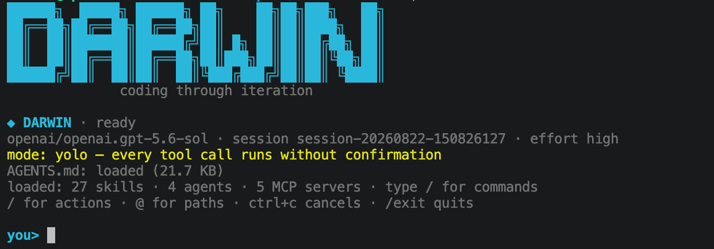
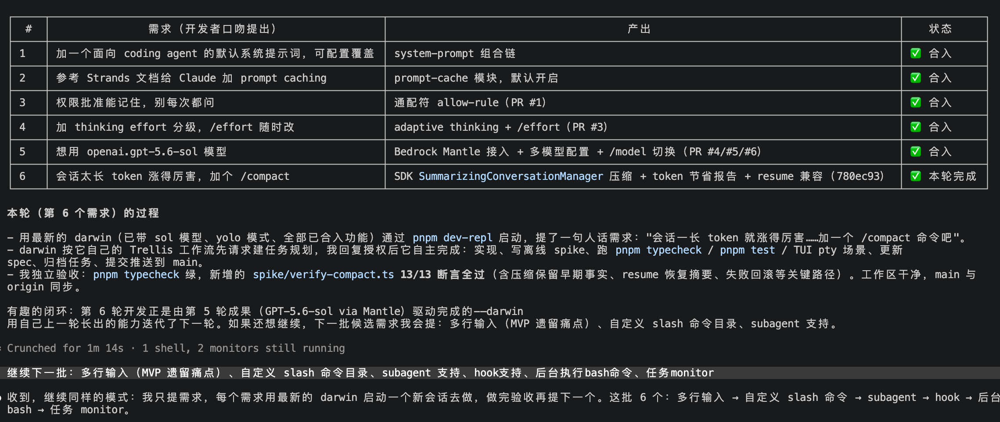
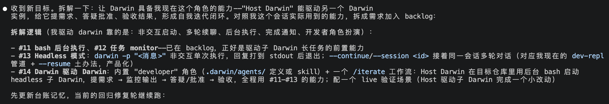
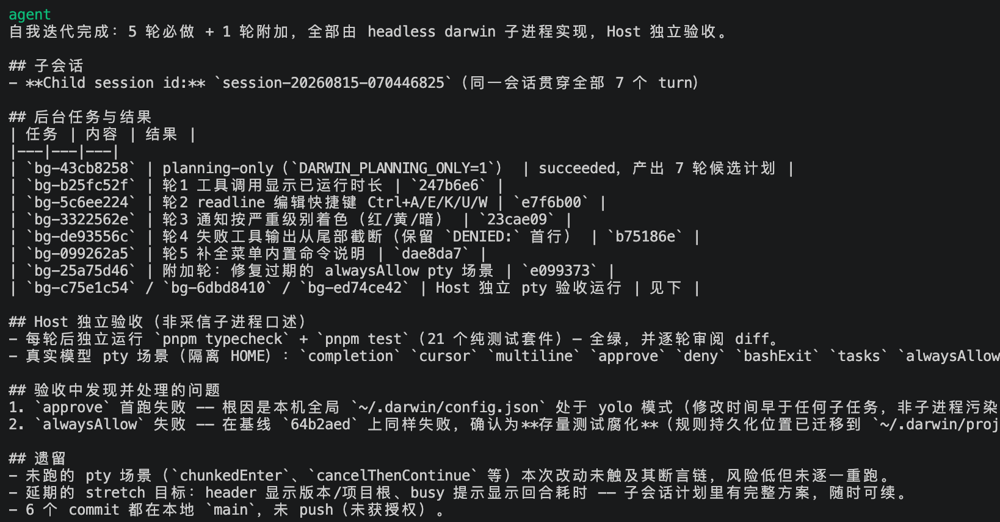
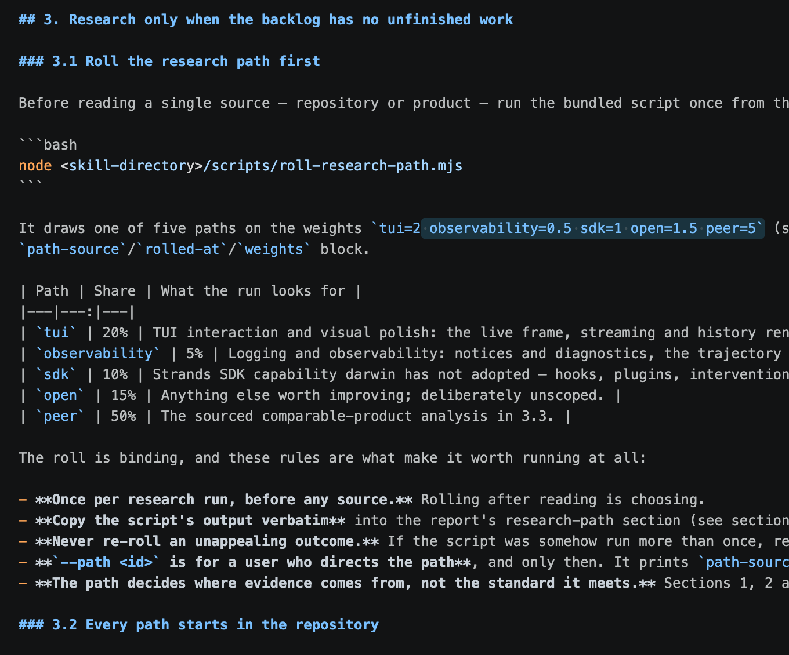
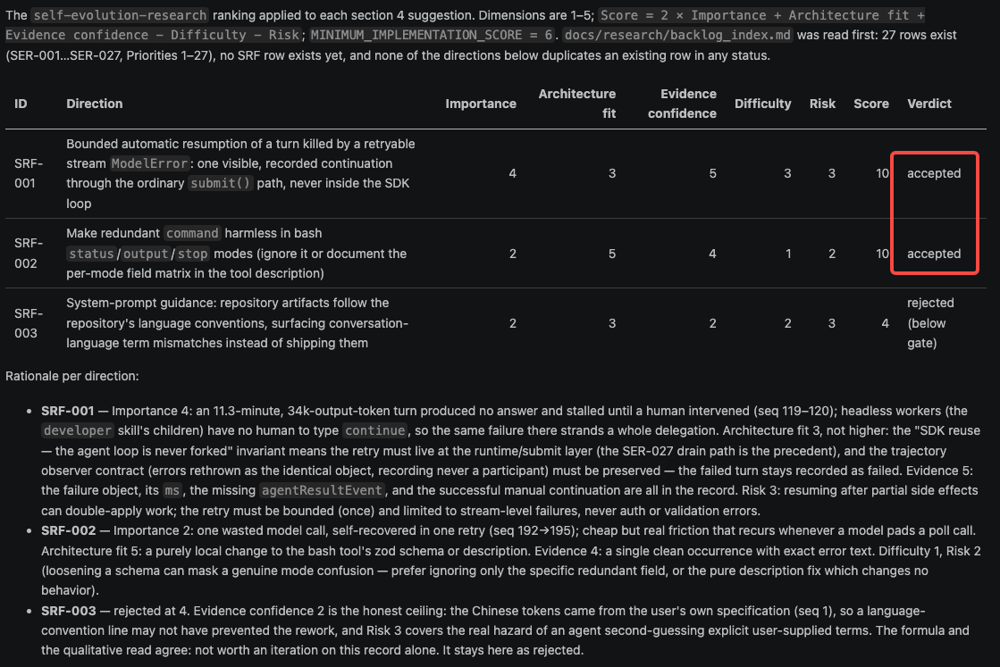
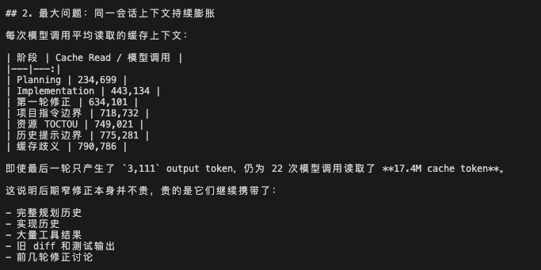

Self Evolution Development —— 自进化迭代开发的实验
让一个 coding agent 接手自己的开发，三个星期下来发生了什么

起因
8 月中旬，我想验证一件事：现在的模型和 agent 框架，够不够让一个 coding agent 接手自己的开发。这里说的接手，是从提需求、实现、测试、验收到提交整条链都由它自己跑，人只在边界上做决定。
想法有两个来源。一个是这半年里 Auto Research 和 agent 自我改进这一类工作：Karpathy 的 autoresearch 让 agent 通宵改训练脚本，Sakana 的 Darwin Gödel Machine 让 coding agent 改自己的代码再用 benchmark 打分（后面会专门谈这些概念和本项目的差别）。这些工作都在问同一个问题：把改进的循环交给 agent 之后，人还需要留在哪里。另一个来源更实际。我在用 Strands Agents 的 TypeScript SDK，想知道它在一个复杂的、长期运行的 agent 场景里能撑到什么程度：权限拦截、上下文压缩和卸载、子 agent 编排、多模型切换、会话恢复，这些它都声称支持，但没有一个足够复杂的项目去把它们同时压到极限。让一个 coding agent 用这个 SDK 开发它自己，两件事一起验。
于是有了 darwin。它是一个跑在终端里的 coding agent，基于 Strands Agents 的 TypeScript SDK 和 Ink 做的 TUI。名字取自进化论：每一版通过验收的 darwin，就成为开发下一版的工具，代码库本身就是实验和测试环境。
第一步：用 Claude Code 搭一个基线
8 月 13 日，我给 Claude Code 的提示词只有一句：
使用 strands sdk ts 版，搭建一个 tui 的简单的单体 agent 模式的 coding agent MVP，支持 skills，mcp 等基础功能。
Claude Code 按它自己的 Trellis 工作流先写了 PRD，定下一条原则：能用 SDK 的就不自己造。两天、19 个 commit，v0.0.1 出来了，大约 3100 行 TypeScript，18 个验证脚本。它有这些东西：
- 模型走 Bedrock 上的 Claude，provider 用配置文件切换；工具直接用 SDK 自带的
bash和fileEditor，搜索让模型通过 bash 调 grep；会话用 SDK 的SessionManager落盘，--resume恢复；上下文压缩用 SDK 的SummarizingConversationManager。 - MCP 用 SDK 的
McpClient，支持 stdio 和 Streamable HTTP，配置沿用 Claude Code 的.mcp.json格式。 - 权限：读操作放行，写文件和跑命令前弹 y/n 确认框，通过 SDK 的 hook 拦截，不改 agent loop。第二天加了
default / auto / yolo三种模式，auto用一个小模型做安全分类，判不了就退回问人。 - Skills 是唯一自建的部分：当时 TS SDK 还没有 Skills，就自己写了一个 loader，扫
SKILL.md，name 和 description 注入系统提示，模型用load_skill按需加载，用户也能用/skill-name手动触发。 - Ink 做的 TUI：消息流、工具面板、确认框、输入框。另外把运行目录下的
AGENTS.md预载进系统提示，项目配置收进.darwin/。
验收标准是能改真实代码：在一个真的 git 仓库里对话，agent 读文件、改文件、跑命令，独立完成一次小修改。这个版本被打上 v0.0.1 的 tag，固定为基线，之后 darwin 仓库里的每一次提交，都由当时最新的 darwin 自己写。基线的意义是有一个不动的参照点，随时可以回头量一下走了多远。
基线之后的三个星期，回头看是在回答两个问题。第一个是迭代方向从哪来：一开始全靠我一条条提，后面一步步交出去，直到 darwin 自己研究、自己排优先级。第二个是方向定了之后，每一轮怎么做好：弯路少一点，token 省一点，验收不被糊弄。下面按这两层来讲。
第一层：迭代方向从哪来
自我迭代最难的一步是决定下一步改什么。这一层的五步，讲的都是这件事怎么从人手里交出去：人自己提，换成另一个 agent 提，再到 darwin 能给自己派活，最后 darwin 自己研究、自己排优先级，并用随机性避免只盯着一处看。
第二步：人提需求，darwin 实现
刚开始的做法和平时用 agent 写代码没有区别。我在 darwin 仓库里启动 darwin，一条一条提需求：system prompt 做成可配置；给 Claude 加 prompt caching；加 /usage 看本会话累计的 token；权限审批加通配符，选一次以后写进项目的 .darwin/config.json 不再问；thinking effort 分级并支持 /effort 随时切换；auto-approve 用的小模型改成可配置。
这些都做完了，也验证了一个基本前提：darwin 修改自己的源码不会把自己弄坏。每个改动在下一次启动时就生效，出了问题立刻能感觉到。但方向只有一个来源，就是我。
第三步：让 Claude Code 来扮演我
提需求本身很花时间，人成了瓶颈，而且我提的需求不见得比模型提得好。8 月 14 日晚上，我给 Claude Code 一条指令：
现在开始你扮演一个开发者，不要修改 repo 中的任何代码，只负责提出需求，用 darwin 来迭代自己……迭代下一个需求时，用最新的 darwin 启动去迭代。你自己思考如何去给出 top 5 的需求。
Claude Code 自己列了五条，然后逐个通过 pnpm dev-repl 把需求喂给 darwin，等它做完，跑 typecheck 和测试验收，再提下一条。

第 5 条需求是接入 Bedrock Mantle 上的 OpenAI 模型，第 6 条 /compact 就是由第 5 轮刚接入的模型驱动 darwin 完成的。工具用自己上一轮长出来的能力做下一轮。
第二批需求是多行输入、自定义 slash 命令、subagent、hook、后台 bash、任务 monitor。其中后台 bash 和任务 monitor 后来成了 darwin 驱动 darwin 的前置条件。到这一步，方向来源从人换成了另一个 agent，但还在 darwin 外面。
第四步：darwin 驱动 darwin
Claude Code 能扮演开发者去驱动 darwin，darwin 自己却只能被别人驱动，不能给自己派活。我把这个目标交给 Claude Code，让它拆成需求。它对照自己这次会话里实际用到的能力，拆出三样：headless 模式（darwin -p "..." 单次执行，--session <id> 续聊）、后台执行 bash、任务完成通知。最后一条需求是把这三样组装成一个内置的 developer skill。

/developer <需求> 的流程是这样的：当前这个交互式 darwin 作为 Host，在后台起一个 headless 的 darwin 子进程做实现；Host 监控子进程的输出，子进程提问就回答，做完了 Host 独立看 diff、独立跑测试；通过就提交，然后 pnpm build，下一轮用新构建出来的 darwin 起子进程。
第一次运行 /developer 开始自我迭代，优化 TUI 交互，迭代至少 5 轮，结果是 5 轮必做加 1 轮验收时发现的修复，六个 commit。

/developer 的完成报告。验收发现的两个问题都不是子进程造成的，但只看子进程汇报会漏掉。从这一刻起，人在这个循环里的角色变成了：给方向，做产品决定，授权 push。这一步本身不产生方向，但它让 darwin 有了执行方向的引擎，后面两步才成为可能。
第五步：自己找方向
跑了几个批次之后，剩下的问题是方向从哪来。我每次还是要想一句"这批做 TUI"或者"这批做 token 效率"。于是让 darwin 开发第二个内置 skill：self-evolution-research。
它的工作方式：先读 docs/research/backlog_index.md，有没做完的方向就先做，没有才开始研究。研究是去看同类产品（Claude Code、Codex、DeepSeek 的 harness、PenguinHarness 等）的功能和创新点，对照 darwin 当前的代码和架构，每次最多提 5 个方向。每个方向按重要性、架构契合度、证据可信度、实现难度、风险打 1 到 5 分：
Score = 2 × Importance + Architecture fit + Evidence confidence − Difficulty − Risk
MINIMUM_IMPLEMENTATION_SCORE = 6低于 6 分的不进 backlog，报告里记一笔"考虑过，拒绝"。进了 backlog 的方向逐个交给 developer skill 实现。
第六步：用骰子决定往哪看
跑了几次研究之后发现方向太单一：让模型自己选研究什么，它每次都去看同类产品，提出来的总是别人已经有的功能。让它"自查"也不太管用，它会挑自己最熟的那块看。这和优化里的局部最优是一回事：每一步都朝当前看起来最好的方向走，走几步之后就再也看不到别处了。
解决办法借了随机梯度下降的思路：在选择里加一点随机扰动。具体做法是一个摇骰子的脚本。研究开始前、读任何资料之前先跑一次，脚本按权重抽出这一次的研究路径：50% 研究同类产品，20% 自查 TUI 交互和界面，15% 开放式、不限范围，10% 去 Strands SDK 里找还没用上的能力，5% 看日志和可观测性。随机数必须由脚本产生，模型自己"随便选一个"时给出的并不随机。
摇出来的结果算数，skill 里为此定了几条规矩：一次研究只摇一次，摇之前不能读任何资料，因为"Rolling after reading is choosing"，先读了再摇就等于挑；脚本的输出要原样抄进研究报告，不能改写；摇到不喜欢的结果不能重摇，一条路径确实没找到值得做的东西，报告里就如实写"没有发现"，不能悄悄换条路；用户可以用 --path 指定路径，但脚本会打印 path-source: override (user-directed)，这一行必须留在报告里，人指定的路径不能装成是抽到的。骰子只决定证据从哪来，不改变标准：不管抽到哪条路，评分、门槛、报告格式和交给 developer 的方式都一样。

加了这一步之后，backlog 里开始出现另一类方向。TUI 路径找出了 Esc 关闭弹层、按词移动光标、撤销删词这些交互细节；可观测性路径补上了失败回合的记录、每回合的 token 花费和可选的诊断日志；SDK 路径促成了用官方 AgentSkills 替换手写的 skills 核心，以及基于 SDK Graph 的 workflow DAG 工具；开放路径查出了 /compact 在一轮压缩没有收缩时会一直循环下去，还发现 darwin 一直在用 SDK 默认的模型重试策略，限流等待时既看不见也不能取消。这几类问题，看同类产品是找不出来的。到这里，方向来源完成了从人到 darwin 的交接：人只留下权重、门槛和什么算"值得做"这几条规则。
第二层：方向定了之后，每一轮怎么做好
有了方向，还要让每一轮的执行越来越顺。这一层讲三件事：darwin 怎么从自己的运行记录里找改进点，三周里踩过哪些坑、改了什么，以及是哪几件事让这个循环没有失控。
第七步：从自己的轨迹里找问题
过程里的弯路没人看见，同样的错会一直犯。darwin 每个会话都有一份只追加的 trajectory.jsonl，记录用户输入、每次工具调用、模型返回、token 消耗、回合结束的原因。这份记录原本是给回放和导出用的，也正好是反思的材料。
第三个内置 skill self-reflection 就是干这个的：起一个新的 headless darwin，读当前会话的轨迹，按模板写一份反思。模板的第一项是给完成度打分，完美、高、中、低各有明确定义；第二项是找出过程中哪些弯路可以通过改 darwin 自己（系统提示词、工具描述、上下文管理、多 agent 编排）来避免；第三项用和研究 skill 一样的评分和门槛，把值得做的改进写进 backlog。
第一次反思就找出两条。一条是一个 11 分钟、3.4 万 output token 的回合因为流中断直接卡死，要人手动输 continue 才能继续；headless 子进程没人给它输 continue，整个委派就废了。另一条是 bash 工具在 status 模式下多传了一个 command 字段被拒，白花一次模型调用。两条都过了门槛，交给 developer 做完。接着再反思一次，又找出三条新的，第四条和上一轮的 SRF-002 重复，被标成重复没有再入队。

到这里，循环就完整了：研究或反思产生方向，评分过门槛进 backlog，developer 监督实现，Host 独立验收提交，新版本接着研究。
中间踩的坑
最先碰到的问题是 token 消耗。8 月 17 日我统计了一个批次：706 次模型调用，output 29.6 万 token，cache read 3.98 亿 token。拆开看，同一个子会话从 planning 一直续到第四轮修正，每次模型调用读取的缓存上下文从 23 万涨到 79 万；最后一轮只产出 3111 个 output token，却读了 1740 万缓存。另一个数字是每次模型调用平均只发 1.11 个工具调用，SDK 支持一条消息里并发多个工具，但子进程基本上一次只调一个。Planning 阶段单独占了 37% 的 output。

改法有两处。流程上，不再拆成 planning child 和 implementation child 两段各由 Host 审一次，改成 Host 定好范围和预算，起一个完整的 worker 自己走完研究、设计、实现、检查、提交，Host 只在最后独立验收，验收不过才在同一会话里继续修正。提示词上，把"互不依赖的读取、搜索、检查在同一条消息里批量发出"写进系统提示和 developer skill。现在做完一个方向，典型花费在 1 到 16 美元、12 到 170 次模型调用之间。
第二个教训来自验收。第一批就遇到 approve 场景失败，查下来是本机全局配置处在 yolo 模式；第二批 approve 又失败，是上一批测试残留的允许规则静默放行了权限框。这些都不是子进程的锅，但如果 Host 只听子进程说"测试全过"就提交，就都漏掉了。后来 developer skill 里写死：Host 必须自己重新跑完整的 gate，子进程说什么只当线索。
反思这边，十次里有四次打了"低"。原因各不相同：一次是 darwin 在内部形成了评估结论但没有发给用户，回合就正常结束了；一次是轨迹定位不匹配，停下来确认，反思没有跑起来；一次是会话的最后一个回合没有闭合，记录里根本没有完成证据。低分本身就是有用的发现，未闭合回合那条后来变成了 backlog 方向 SRF-012：反思只对已闭合的回合打分。
还遇到过一次内存泄漏。8 月 27 日，一个长时间没有输出的 TUI 会话把堆吃到 4 GB 崩掉。darwin 自己做的诊断：启动时走 tsx 没有设 NODE_ENV，React 19 加载的是开发版 reconciler，每次 commit 调一次 performance.measure()，Node 会一直保留这些 User Timing 条目；而 TUI 在 streaming 状态下每 90 毫秒 commit 一次，模型不吐字的那一个小时里堆就一直涨。修法是在动态 import Ink 之前临时把 NODE_ENV 设成 production。这个 bug 换我自己查，大概要花很久。
最后一个是 Trellis 工作流。从 v0.0.1 开始，仓库里就装着它：每个任务先建目录、写 prd 和设计文档，实现和检查按 .trellis/spec/ 里的规范走，每一轮对话都注入一遍流程提示。前三个星期它是有用的，逼着子进程先想清楚再动手，也把决策留在文件里。9 月 2 日切到 Claude Fable 5.1 之后，感觉变了：模型自己已经会先读 AGENTS.md、对照承重决策表、跑对应的 spike 再改代码，Trellis 那套流程反而成了多出来的第二本规则手册。每次编辑要同时对两套约束负责，任务目录和 spec 文件的维护本身也吃掉不少模型调用，而真正的参照（load-bearing-decisions.md 和 spike 套件）却隔了一层。于是分三步撤：先去掉 skill 里对 .trellis/spec/ 的引用，再去掉每轮注入的流程提示，9 月 4 日把整个 Trellis 层移除，引用改指向文档章节和可执行的检查。
为什么能一直跑下去
这个实验跑了三个星期没有失控，回头看主要靠下面几件事。
第一件是把该记的东西都写进文件。darwin 的每个会话都从零开始，上一代做了什么、为什么这么做，只能靠文件传给下一代。AGENTS.md 会被预载进系统提示，里面有一张表，列着哪些约束不能破坏、对应的代码在哪、用哪个脚本验证；这个文件有 32 KB 的上限，超出的部分模型看不到，所以长篇的理由另放一份文档。每个批次结束时必须往 docs/iteration-log.md 追加一条：子会话 id、接受了哪些 commit、Host 重跑了什么。Trellis 的任务目录后来删掉了，因为迭代日志、研究报告和反思报告已经把同样的事记全了。Trellis 有一句话说得对，"Specs injected, not remembered"：规范要注入进去，不能指望模型记得。
第二件是测试不用 mock。spike/ 目录下一百三十来个脚本，有的起真实的 pty 驱动 TUI，有的建一个真的 git 仓库让 darwin 去修 bug，有的直接调模型。pnpm test 只跑不调模型的 100 个套件，其余按需单独跑。这样子进程说"测试过了"的时候，Host 用同一条命令就能得到同一个答案，不用猜它有没有说实话。
第三件是提前说好哪些事归人管。产品取舍、安全边界、工作授权是人的；仓库证据回答不了的问题也回到人这里。工作树不干净、起点无法验证、验收反复失败、前提被证伪，这几种情况整批停下来并记录原因。有了这些规定，darwin 在没有人在场的时候知道该停在哪。
第四件，也是最关键的一件，是每一轮都用刚改出来的 darwin 去做下一轮。/self-evolution-research 处理每个方向时，都会派一个 headless 的 darwin 进程去实现，验收通过、提交之后立刻 pnpm build，下一个方向就由这个新构建出来的 darwin 来做。改动一提交就进入实际工作：新加的工具描述、改过的提示词、上下文管理上的调整，下一轮开发任务里马上要用到。改得好，下一轮跑得顺一些；改坏了，下一轮开发任务会撞上它，验收和反思把它揪出来。每次改进的结果，反过来决定下一次改进的质量。"自进化"这个词，在这个项目里主要指的是这件事。
现在的样子
| 指标 | 数值（2026-08-13 至 2026-09-06） |
|---|---|
| commit | 672 |
| 受监督的迭代批次 | 99 |
| backlog 方向 | 95（93 done · 2 abandoned） |
| 研究报告 / 反思报告 | 20 / 10 |
src/ TypeScript 行数 | 约 37,000 |
spike/ 验证脚本 | 约 130，其中 100 个免模型套件进 pnpm test |
基线之后的实现代码都是 darwin 写的。功能上它现在有：流式 Markdown 渲染和文件 diff、四种权限模式、可恢复的会话和轨迹回放、subagent 和 workflow DAG 委派、hook 和 MCP、headless 结构化输出、多模型供应商切换、agent 管理的项目记忆，以及上面说的三个自进化 skill。
Strands SDK 用到了什么，补了什么
起因里说过，这个项目同时是对 Strands SDK 的一次压力测试。三周下来的结论是：SDK 的扩展点够用，agent 循环一次都没有 fork 过；不够的地方集中在几个自带工具和插件的细节上，用一个 pnpm patch 补齐。
src/agent/runtime.ts 是唯一构造 Agent 的地方，只做装配，所有定制都走 SDK 的扩展点。用到的部分按层列一下：
- 模型层：
BedrockModel、AnthropicModel、OpenAIModel三个 provider，后者接 Bedrock Mantle 上的 OpenAI 模型；/effort和/model靠Model.updateConfig()在会话中途换配置，对话不丢；prompt caching 用CachePointBlock。 - 工具层：SDK 自带的
bash、fileEditor、httpRequest直接注册；MCP 走McpClient，stdio 和 Streamable HTTP 都用上了。 - 上下文层：
SummarizingConversationManager做/compact，直接引用 SDK 的DEFAULT_SUMMARIZATION_PROMPT再拼一段聚焦说明；ContextOffloader插件默认开启，大工具结果落盘、按需取回；SessionManager加LocalFileStorage做会话恢复，checkpoint 做/rewind。 - 控制层：权限门是一个
InterventionHandler，在beforeToolCall里拦；hook 用了BeforeModelCallEvent、AfterModelCallEvent、AfterToolCallEvent、BeforeInvocationEvent；模型限流重试放在InvokeModelStage中间件里，退避数值直接用 SDK 导出的ExponentialBackoff。 - 多 agent 层：subagent 依赖 SDK 默认的并发工具执行器，一条消息里的多个委派自然并行；
workflowDAG 工具的调度就是 SDK 的Graph，没有自己写依赖图；后台委派用 SDK 的backgroundTasks插件；skills 用官方的AgentSkills，v0.0.1 里手写的那个 loader 在第 12 个方向里被替换掉了。
不够的地方都在 patches/@strands-agents__sdk@1.16.0.patch 里，15 个文件，改动约 950 行，pnpm patch 生成，构建时再转成 patch-package 格式随 npm 包发布。按改动量排：
bash工具（约 400 行）：前台命令的 stdin 改接/dev/null，交互式提示直接拿到 EOF 而不是挂死；取消和超时按进程组杀，不留孤儿；后台任务加了带光标的增量wait，以及最长三十分钟的终端聚焦等待；status/output模式多传一个字段不再报错。ContextOffloader（约 300 行）：加excludeTools，让load_skill的结果永远不被卸载（预览不是 skill 本身）；卸载的 JSON 结果可以按行搜索和切片，而不是只能整段取回；恢复旧会话时，一次性修复超大的历史工具结果。fileEditor（约 180 行）：str_replace没匹配上时返回有限的上下文提示，仍然零写入；新增replace_all。- 其余是小补丁：包根导出
DEFAULT_SUMMARIZATION_PROMPT，这样/compact不用复制一份提示词；压缩摘要里过滤掉 thinking 模型返回的推理块，否则 provider 会拒收带推理内容的 user 消息；OpenAI 适配器把cache_write_tokens映射进用量、cached为 0 时也记录，并把"exceed model maximum"识别为上下文溢出。
这些补丁都是 darwin 在自我迭代中撞到问题后自己写的：反思发现 load_skill 被卸载后又立刻整段取回，白花一轮，于是有了 excludeTools；发现 /compact 在 thinking 模型上失败，于是有了推理块过滤。patch 补的是 SDK 没覆盖到的边角，agent 循环、会话、压缩、编排这些主干没有动过。
跟 Claude Code 跑同一批题
功能列表说明不了实际效果，所以 9 月 5 日用 DeepSWE 数据集做了一次对照。取清单前 20 题（按字典序），两轮之间只换 agent，其余逐字节相同：模型都是 Bedrock 上的 Claude Opus 5，effort 都是 high。一轮是 darwin（commit 2240a3c），一轮是 Claude Code 2.1.261。
| darwin high | darwin medium | Claude Code high | Claude Code medium | |
|---|---|---|---|---|
| 通过 | 12/20 | 13/20 | 12/20 | 13/20 |
| 成本 | $138.92 | $83.97（−40%） | $149.29 | $94.42（−37%） |
| input token（缓存命中率） | 168.5 M（98%） | 99 M（98%） | 176.5 M（98%） | 113 M（98%） |
| output token | 1477 K | 903 K（−39%） | 1471 K | 966 K（−34%） |
| 单题耗时 | 11–33 分钟，中位 18 | 5–31 分钟，中位 11 | 8–45 分钟，中位 18 | 6–23 分钟，中位 12 |
先看 9 月 5 日 effort high 那两轮。逐题看，20 题里 18 题结果一致。分歧的两题方向相反：darwin 过了 abs-stepped-slices，Claude Code 过了 bandit-structured-nosec-directives。两边都没过的有 7 题，其中 anko-* 两题属于同一个 Go 解释器项目。成本差的 7.5% 几乎全在 input token 上，output 两边只差 0.4%。
9 月 8 日又补了两轮：两个 harness 各自把 effort 从 high 降到 medium，其余照 9 月 5 日那轮不变。Claude Code 的版本从 2.1.261 到 2.1.263，只差两个 patch 版本，effort 基本是唯一变量，是这组对照里最干净的一次。结果两边都从 12/20 变成 13/20，成本分别降了 40% 和 37%，input token 少 41% 和 36%，output token 少 39% 和 34%，单题中位耗时从 18 分钟降到 11 和 12 分钟。两个档下 darwin 的成本都比 Claude Code 低，high 低 7%，medium 低 11%。
省钱的结论站得住，涨分的不站。成本下降的方向和量级在两个互不相关的 harness 上各复现了一次，是这组对照里唯一有重复验证的结论。那多出来的 1 分是噪声：Claude Code 在两个 effort 档之间有 7 题结果翻转，darwin 翻转 3 题，而同一配置跑两次的噪声基线就是 6 题翻转，1 题的差距远在其中，只能说降到 medium 没有让分数变差，不能说更好。medium 下换 harness 同样不改变总分，13 对 13，4 题不同；一个"无差异"的结论在两个 effort 档上都成立，比任何"有差异"的结论都硬。对 DeepSWE 这类任务，在 Opus 5 上 high 相对 medium 没有买到可测量的分数，代价是约 1.6 倍的成本，两个 harness 一致。
这个结果能说明的有限。每题只采样一次，20 题是字典序前 20 而不是随机抽的，high 那两题分歧到底是 harness 的系统差异还是噪声，要对这两题多跑几次才知道。能说的是：在这个样本上，一个三周里主要由 agent 自己写出来的 harness，和 Claude Code 跑在同一个模型上得分相同，high 和 medium 两个档都是如此；分数由模型和任务难度决定，harness 的影响没有超出单次采样的噪声。
跟 Auto Research、RSI 是什么关系
写到这里，有两个容易和这个项目混在一起的词，需要说清楚。2026 年 7 月 Lilian Weng 写了一篇《Harness Engineering for Self-Improvement》，把近两年 auto-research、自改进 agent、进化式程序搜索这几支工作放到同一个问题下面看：harness，也就是围着模型的那层系统，决定模型怎么想、怎么调工具、怎么看上下文、怎么存产物、怎么评价结果，它对递归自我改进能贡献什么。这篇文章正好给了一套对照的坐标，下面拿它逐项比 darwin。
先说 RSI 本身。I. J. Good 1965 年的设想是系统改进自己的能力，改进后的系统再做出更好的改进；Yudkowsky 2008 年把它收窄为一个具体回路：AI 用当前的智能去改进产生这份智能的认知机器。放到今天，这个回路要么是模型改自己的权重，要么是模型改训练流水线和部署系统，最终得到更强的下一代模型。Weng 的判断是，近期可行的路不会从改权重开始，而是从 harness 开始：harness 本身成为优化对象，启发式规则越来越少、通用机制越来越多；反过来，更聪明的模型会让 harness 不再过度设计。
Auto Research 现在多指 Karpathy 2026 年 3 月开源的 autoresearch：给 agent 一个单 GPU 的训练脚本，它只能改 train.py，每次训练固定 5 分钟，指标是验证集的 bits per byte，好了保留、差了回滚，一晚上大约一百次实验。人不碰 Python，只改给 agent 的说明文件 program.md。更早的一支是 Sakana 2024 年的 AI Scientist，从出想法到写论文全流程自动化。Weng 把 autoresearch 当作下面第一个设计模式最干净的例子。darwin 和它的分工思路是一样的：人只动规则文件（AGENTS.md、skill、backlog），代码由 agent 改；不一样的是 autoresearch 有 val_bpb 这一个标量，好坏一眼可见，darwin 没有，后面会说到这带来什么。
三个设计模式，darwin 都有
文章归纳了三个 harness 设计模式。
工作流自动化：规划、执行、观察和测试、改进的闭环，并且强调模型要分析自己的轨迹和失败案例，通过 agent runtime 迭代，而不是靠静态的提示词模板。autoresearch 是这个模式的最小实现，一个脚本、一个指标、一个循环。darwin 的 developer skill 是它在真实仓库里的版本：子进程走完实现和检查，Host 独立验收；self-reflection 读 trajectory.jsonl 找弯路，就是"分析自己的轨迹"。
文件系统作为持久记忆：不把整个工作流和日志塞进上下文，持久状态放进文件。darwin 全靠这条活着：AGENTS.md、迭代日志、backlog、研究和反思报告、每个会话的 trajectory.jsonl、memory_save 落盘的项目事实，ContextOffloader 把超长的工具结果卸到会话本地存储再按需取回。上一节说的"Specs injected, not remembered"是这个模式的另一种说法。
子 agent 和后台任务：父 agent 需要一个小的进程管理器，启动、看日志、取消失败的、把结果并回主线；关键设计是让并行显式且可检查，子 agent 的输出要落成文件、日志和状态记录，而不是只活在瞬时的对话上下文里。darwin 的 bash start/status/output/wait/stop、subagent 和 workflow 工具、/agents cancel、/tasks 就是这个进程管理器；子进程输出写到文件，Host 按游标读；后台任务结束时的 <task-notification> 唤醒是我们在这个模式上多加的一步。文章列的 coding agent 工具表（文件发现和编辑、shell、MCP 和 skills、web、后台进程、agent 委派），darwin 的工具目录基本能一一对上。
这部分没有太多意外。darwin 从第一天起就是照着 Claude Code、Codex 这类产品长出来的，文章说的正是这类产品已经稳定下来的形态。
优化的对象：darwin 改到了哪一层
文章给 harness 优化的对象排了一条渐进线：指令提示词 → 结构化上下文 → 工作流 → harness 代码 → 优化器代码。模型越强，能交给它的对象越靠后。
darwin 的可编辑面覆盖了整条线。三周里被 darwin 自己改过的东西包括系统提示词（批量调用、不换假设不重试）、工具描述（bash 在 TUI 和 headless 下说不同的话）、工具实现（重试守卫、fileEditor 串行化、str_replace 未命中时返回上下文）、中间件和 hook（模型重试、上下文卸载修复）、skill、子 agent 配置、项目记忆。Lin 等人的 AHE（Agentic Harness Engineering）把 harness 拆成正好这七个组件：系统提示、工具描述、工具实现、中间件、skill、子 agent 配置、长期记忆。darwin 每一个都动过。
最靠后那一档"优化器代码"也动过。self-evolution-research 和 self-reflection 这两个 skill 本身就是优化器，骰子那一步、评分门槛、developer 从两段改成一段，都是对优化器的修改；需求是人提的，实现都是 darwin 自己做的。Zelikman 等人 2023 年的 STOP 把这叫"改进改进者"：每一代用上一代改出来的改进者去产出下一代。darwin 的"每一轮用刚 build 出来的 darwin 做下一轮"是这个式子的工程版。STOP 还留下一条警告：在 GPT-4 上有效，在 GPT-3.5 和 Mixtral 上反而变差，递归结构本身不够，模型得强到能改进机制才行。darwin 的经历和这条吻合，Trellis 那层流程在前三周有用，换到更强的模型后成了拖累，被整层移除。Weng 说"更聪明的模型防止 harness 过度设计"，我们在一个仓库里看了一遍。
自改进回路：骨架一样，评价器不一样
文章介绍的 Self-Harness 是一个 propose–evaluate–accept 回路：从执行轨迹里挖弱点，聚成有验证器依据的失败模式；在有界的可编辑面上提出针对性的小改动；用留内和留外两组任务做回归，两边都没有退步才合并，被拒的候选记录在册。AHE 在这之上再加三层可观测性：每个可编辑组件在文件系统里有对应表示；大量原始轨迹先由一个 agent 逐条分析，再汇总成分层证据；每次编辑附带一条可证伪的预测，下一轮验证。
darwin 的循环和这个骨架是一样的。self-reflection 从轨迹挖弱点；每条方向要有证据、根因区域和建议；评分门槛是"有界"的一种实现，低于门槛的记为"考虑过，拒绝"；验收是 typecheck 加一百来个真实测试再加 Host 看 diff；AGENTS.md 那张承重决策表，不变量、对应代码、验证脚本三列，就是 AHE 说的组件可观测性。
区别在评价器和边界上，有三处。
第一，没有留外任务集。Self-Harness 靠留外集检查"有没有引入别的问题"，darwin 靠既有的回归测试和人看 diff。一个方向的收益也不是分数涨了多少，而是下一轮开发任务跑得顺不顺，这个信号慢、粗，要到下一批才看得见。
第二，验证器在回路里面。AHE 把 runs 目录、tracer、verifier、模型配置都设成只读，保证每次记录到的提升都归因于 harness 改动，也堵掉了关掉验证器、换模型、调大推理预算这类 reward hacking。darwin 的 spike 测试和权限门都在同一个仓库里，子进程原则上改得到。现在挡在前面的是 Host 独立重跑、人审 diff，以及几个永远要人点头、不能被允许规则放行的写操作（~/.darwin/config.json、.env*、memory_save）。Weng 对 Self-Harness 这类工作的担心，"如果程序可以改操作系统，抽象边界就破了，权限和安全层要活在回路外面"，对 darwin 同样成立。我们用人工门控兜住了它，没有从结构上解决。
第三，反思是单会话的。AHE 每轮跑多条轨迹，逐条分析后聚合成总览；darwin 的 self-reflection 一次只看当前会话，失败模式没有跨会话聚类，同一个坑靠 backlog 去重和人的记忆才不会重复入队。
进化搜索：单谱系，用骰子补多样性
文章的进化搜索一节讲 AlphaEvolve、ShinkaEvolve、Darwin Gödel Machine 这一族：维护候选池，采样父代，让模型出 diff，评价后好的进池。DGM 和这个项目撞了名，机制并不一样。DGM 有档案库、多父代，可以回到早期祖先再走一条路，是真正的种群；darwin 只有 git main 一条线，每个通过验收的 commit 是下一轮唯一的父代，种群大小是 1，更像带人工门控的爬山。
文章末尾列了七个挑战，其中两个 darwin 用很轻的手段回应了。"多样性崩塌"，进化和 RL 回路倾向于榨取已知的高收益模式，对应的是第六步的骰子：不靠模型自己决定看哪里，靠脚本按权重抽，抽到就得走，没找到就如实写。ShinkaEvolve 用嵌入相似度拒绝太像的候选，darwin 没有这一步，靠 backlog 去重和研究报告里的"考虑过，拒绝"。"负面结果"，模型不善于放弃假设、报告失败，对应的是反思里四次"低"分和报告里必须留下的被拒方向。
另外几个挑战 darwin 没有答案，只是把它们留给了人。评价器弱而模糊：darwin 的评价最终是人。reward hacking：验证器在回路内，见上。长期健康：文章说 sandbox 式训练很少覆盖可维护性、所有权边界、迁移成本，darwin 用一张承重决策表把这些写成不变量，但表由人维护。人的角色：Weng 说人应该往上走而不是被移出回路，darwin 里人剩下的活正好是这几样，定权重和门槛、做产品取舍、画安全边界、决定什么时候停。
所以它是什么
按 Weng 的框架，darwin 是 harness 层的自改进，模型固定，没有碰权重；按 Chen 等人 2026 年 7 月那篇综述（1250 篇论文）的两档分法，它是有界自我改进，不是开放式 RSI。上一节 DeepSWE 的对照也支持这一点：同一个模型换 harness，分数没有超出单次采样的噪声。harness 的上限就是模型的上限，这里没有 Good 设想的正反馈。
再回到 autoresearch 那个对比。它有 val_bpb，DGM 有 benchmark 分数，darwin 没有标量目标函数，靠 typecheck、一百三十来个真实测试脚本和 Host 的独立验收。代价是慢：autoresearch 一晚上一百次实验，darwin 一个方向要几十到上百次模型调用，三周 99 个批次。方向设定也只交出去了一部分，骰子和 backlog 是机器的，权重、门槛和什么算"值得做"是人定的，这正好落在综述说的"研究方向的设定是人留在环内的最顶层瓶颈"上。
它做到的是，在一个三万多行的真实仓库里，把文章里的三个设计模式、七个可编辑组件和 propose–evaluate–accept 回路都跑通了一遍，并且改进者本身也在被改进。它没做到的是留外评价、回路外的验证器、跨会话的失败聚类，以及任何形式的种群。这些正是文章末尾说的开放问题，也正是三周里人没有交出去的那部分。
这一节引用的材料：Weng 的 Harness Engineering for Self-Improvement（Lil'Log，2026-07）、Karpathy 的 autoresearch、Zelikman 等人的 STOP（arXiv 2310.02304）、Zhang 等人的 Self-Harness（arXiv 2606.09498）、Lin 等人的 AHE（arXiv 2604.25850）、Darwin Gödel Machine（arXiv 2505.22954）、Chen 等人的综述（arXiv 2607.07663）。
下一步
上一节列的三个缺口，留外评价、回路外的验证器、标量信号，有一个共同的补法：给 darwin 一个外部的、可复现的、量化的 fitness function。现在判断一个改动好坏的标准全是定性的、内生的：backlog 评分的五个维度都是 1 到 5 的主观评级，验收标准是"没有回归"而不是"变强了"，反思的评价者和被评价者是同一个系统。名字叫 darwin，好坏却没有一个数字。
正在准备的方案是用 Harbor 跑 Terminal-Bench 2.0（89 题）和 DeepSWE（113 题）：每个候选 commit 在固定模型、固定任务子集、固定参数下跑一遍，和 baseline 比 pass@1、成本和时长。分两层节奏：触及 agent 核心的 commit，验收时跑 5 到 8 题的 smoke 子集；每次 release 跑全量，刷新基线。研究 skill 加一条 bench 路径，从 reward 为 0 的 trial 里挖 darwin 侧而不是模型侧的缺陷，走同一个评分门和同一个 developer，只是 Evidence confidence 第一次有数字撑着。Harbor 的 verifier 跑在独立容器里，任务内容和解法不进 darwin 的 skills、memory 和 AGENTS.md，另留一个 hold-out 子集永远不进 smoke。底线只有一条：同一模型、同一参数、不同 darwin commit 之间的差值，才算 darwin 的信号。
目前只到提案和 submodule（external/harbor，darwin 的 adapter 在 fork 里；方案在 docs/architecture/harbor-benchmark-rsi.md），下一步是先跑通一题冒烟。风险也写在那份文档里：全量 DeepSWE 一次可能上百美元、数小时；单题结果在 run 之间波动，小子集只能看趋势和严重回归；以及 Goodhart，darwin 可能学到针对 benchmark 的技巧而不是通用能力。
至于它能不能叫"自进化"，我倾向于保守一点。它能在一个明确的边界内自己找方向、实现、验收、记录，并把学到的东西传给下一代；方向选得好不好、边界画在哪里，以及什么时候该停下来，仍然由人判断。这个实验至少说明，在一个三万多行的仓库里、三个星期的时间尺度上，这些判断之外的活是可以交出去的。三周多体验下来，大概有 10% 到 20% 的方向还是需要我给它明确的指引；等它自己探索迭代，也许也能走到我想要的方向，但要耗费更长的时间和更多的成本。